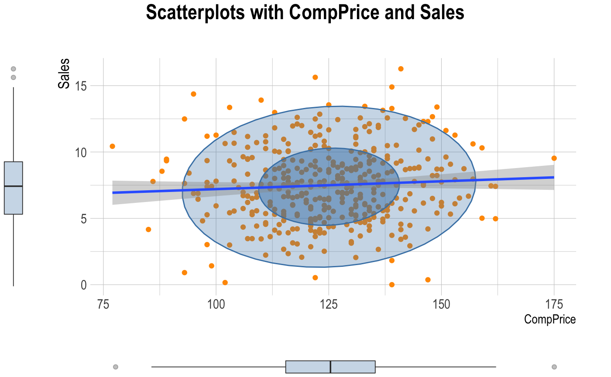
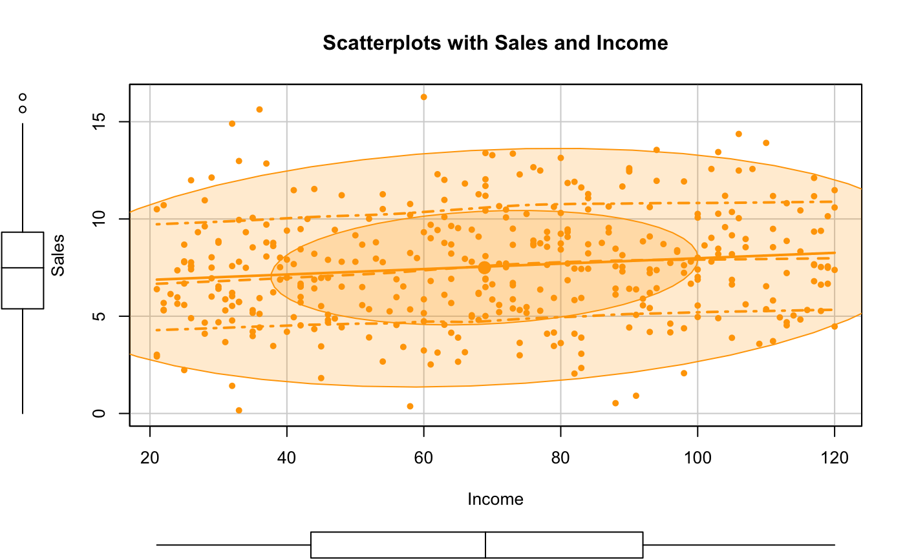
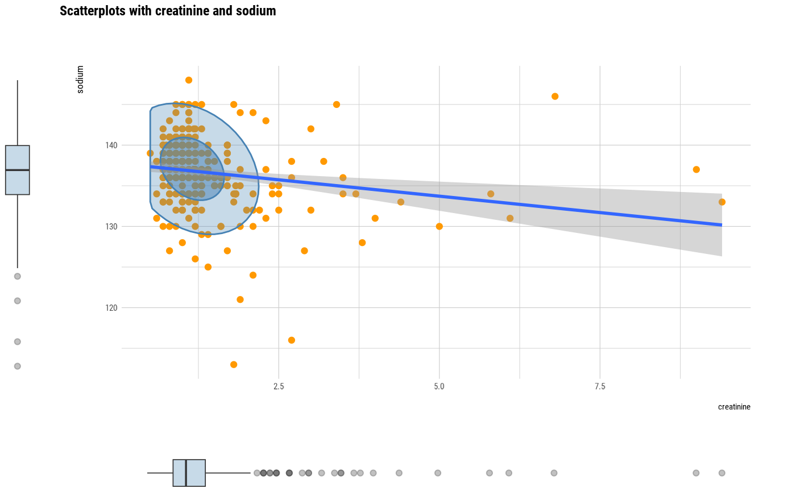
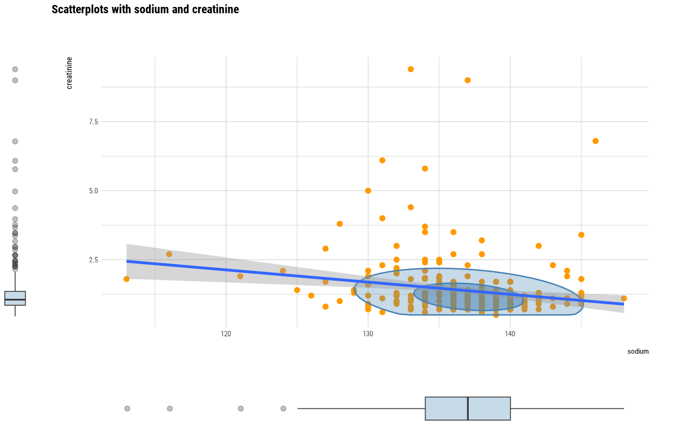
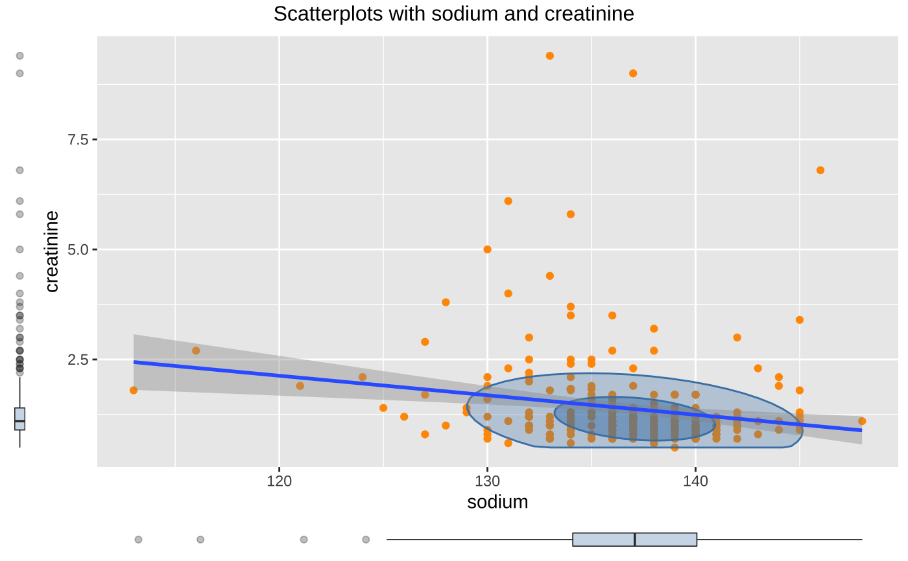

Visualize scatter plot included box plots by attribute of compare_numeric class.
# S3 method for compare_numeric plot(x, prompt = FALSE, typographic = TRUE, ...)
| x | an object of class "compare_numeric", usually, a result of a call to compare_numeric(). |
|---|---|
| prompt | logical. The default value is FALSE. If there are multiple visualizations to be output, if this argument value is TRUE, a prompt is output each time. |
| typographic | logical. Whether to apply focuses on typographic elements to ggplot2 visualization. The default is TRUE. if TRUE provides a base theme that focuses on typographic elements using hrbrthemes package. |
| ... | arguments to be passed to methods, such as graphical parameters (see par). However, it does not support. |
# Generate data for the example heartfailure2 <- heartfailure[, c("platelets", "creatinine", "sodium")] library(dplyr) # Compare the all numerical variables all_var <- compare_numeric(heartfailure2) # Print compare_numeric class object all_var#> $correlation #> # A tibble: 3 x 3 #> var1 var2 coef_corr #> <chr> <chr> <dbl> #> 1 platelets creatinine -0.0412 #> 2 platelets sodium 0.0621 #> 3 creatinine sodium -0.189 #> #> $linear #> # A tibble: 3 x 14 #> var1 var2 r.squared adj.r.squared sigma statistic p.value df logLik #> <chr> <chr> <dbl> <dbl> <dbl> <dbl> <dbl> <dbl> <dbl> #> 1 platele… creati… 0.00170 -0.00166 9.79e4 0.505 0.478 1 -3859. #> 2 platele… sodium 0.00386 0.000505 9.78e4 1.15 0.284 1 -3859. #> 3 creatin… sodium 0.0358 0.0325 1.02e0 11.0 0.00102 1 -428. #> # … with 5 more variables: AIC <dbl>, BIC <dbl>, deviance <dbl>, #> # df.residual <int>, nobs <int> #># Compare the two numerical variables two_var <- compare_numeric(heartfailure2, sodium, creatinine) # Print compare_numeric class objects two_var#> $correlation #> # A tibble: 1 x 3 #> var1 var2 coef_corr #> <chr> <chr> <dbl> #> 1 sodium creatinine -0.189 #> #> $linear #> # A tibble: 1 x 14 #> var1 var2 r.squared adj.r.squared sigma statistic p.value df logLik AIC #> <chr> <chr> <dbl> <dbl> <dbl> <dbl> <dbl> <dbl> <dbl> <dbl> #> 1 sodi… crea… 0.0358 0.0325 4.34 11.0 0.00102 1 -862. 1730. #> # … with 4 more variables: BIC <dbl>, deviance <dbl>, df.residual <int>, #> # nobs <int> #># plot all pair of variables by prompt # plot(all_var, prompt = TRUE) # plot a pair of variables not focuses on typographic elements plot(two_var, typographic = FALSE)